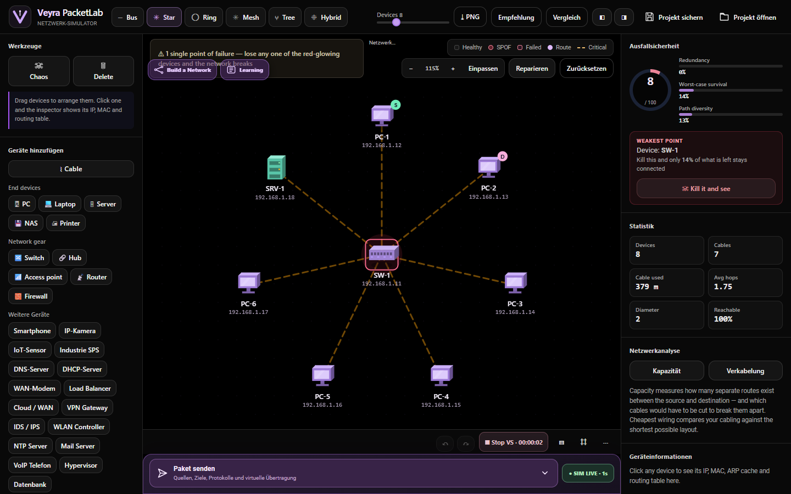
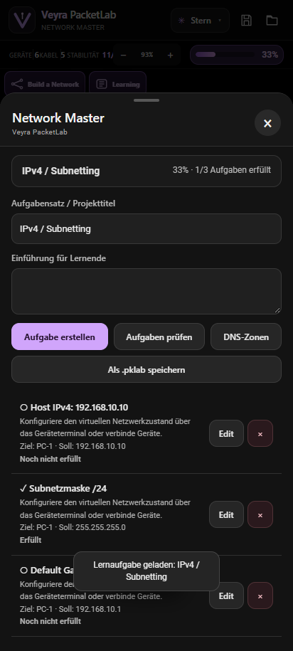

Build a Network
Leere Arbeitsfläche statt vorgefertigter Geräte. PCs, Router, Firewalls, Server und Kabel selbst platzieren.
Dein mobiles Netzwerkstudio: frei verkabeln, Geräte per Terminal konfigurieren, virtuelle Pakete verfolgen, Firewall-Regeln überprüfen und dein Wissen im Network Master testen – alles in einem Workspace.
Pakete folgen Verbindungen. Regeln entscheiden über Zustellung. Das Gerät sieht die Auswirkungen – und protokolliert, was passiert ist.
Leere Arbeitsfläche statt vorgefertigter Geräte. PCs, Router, Firewalls, Server und Kabel selbst platzieren.
Einklappbar, Quelle und Ziel per Doppeltipp wählen. Protokolle, Ports, Payload-Größe und Paketzahl konfigurieren.
Eigene Host- und Netzwerk-Firewall-Regeln, Default-Policy, Anti-Spoofing und Überlastfilter – mit Geräte-Logs.
IPv4/IPv6, DNS, VLAN, Routing, WAN und große Campus-Labs. Live-Fortschritt in Prozent und .pklab-Speicherung.
Jedes Gerät besitzt virtuelle Shell-Kommandos für IP, Gateway, Services, Routing und Firewalls.
Lange Uploads und Downloads mit definierter Rate, Dauer, Bandbreite, Paketverlust und Transferprotokoll.
Der Netzwerkgraph ist mehr als Dekoration: Das Modell berücksichtigt den Kabelpfad, VLANs, Routing, Firewall-Regeln, Paketgröße und die Bandbreite der vorhandenen Verbindung.

Wechsle bewusst in den Learning Mode: Netzplan sichern oder verwerfen, eine .pklab öffnen oder eine Aufgabe laden. Network Master zeigt Fortschritte und bewertet den Zustand der virtuellen Geräte.

Screenshots aus dem laufenden v0.6.0-Build. Keine erfundenen UI-Mockups als angebliche Funktionen.
Android-APK, kompletter Source und Prüfsummen gehören zusammen auf die GitHub-Release-Seite.
Offline-Simulation für Android, inklusive Build a Network, Learning Mode, Geräte-Terminals, Paketkonsole und Firewall-Testumgebung.
Alle vulnerabilitäts-, Firewall- und Spoofing-Szenarien sind virtuell. Das Tool sendet keine echten Angriffs-Pakete und ersetzt weder reale Netzwerkhardware noch eine vollständige Cisco-IOS-Emulation.
PaketLab ist eine deterministische, lokale Netzwerk-Simulation. Es bildet Routing, Paketflüsse und Konfigurationen modelliert ab, startet aber keine realen Router-/Linux-Images.
Normale Pakete ändern keinen Power-Status. Nur explizit gewählte virtuelle Störungen können einen simulierten Ausfall auslösen. Blockierungen und Ereignisse werden in den zugehörigen Logs gespeichert.
Ja. Die .pklab-Datei enthält den ursprünglichen Modus, den Graph und die gespeicherten Aufgaben. Beim Laden wird der Modus anhand der Metadaten wiederhergestellt.
Die Host-Firewall filtert Eingänge am jeweiligen Endgerät. Eine dedizierte Firewall muss physisch im virtuellen Kabelpfad liegen. Internet-Zustellung setzt einen konfigurierten, verbundenen WAN-Pfad voraus.
Source-Code, Tests, Release-Prüfsummen, Bugreports und technische Hintergründe an einem Ort.